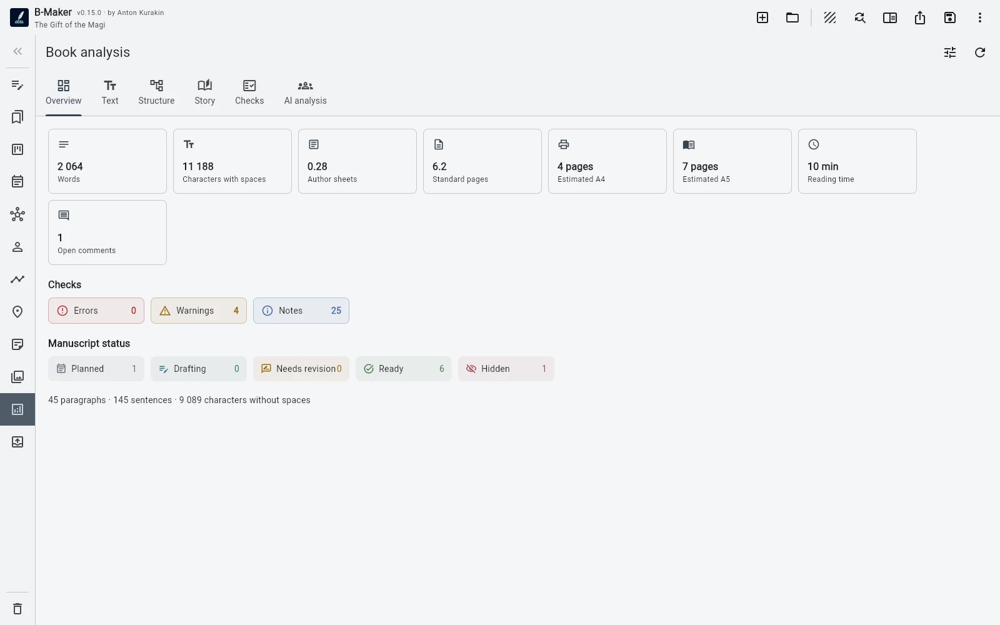
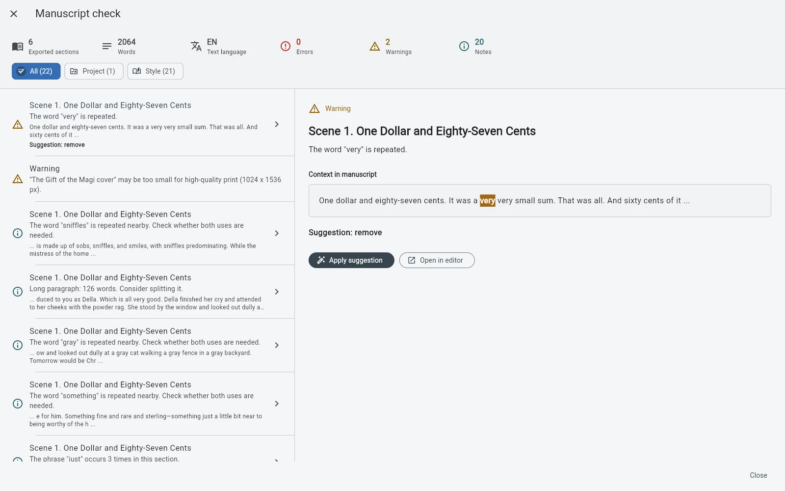

A spell checker mostly sees sentences. B-Maker can also see the project those sentences belong to.
Text-level signals are still useful
Nearby repetition, repeated sentence openings, long sentences, filler patterns, punctuation, mixed alphabets, dialogue typography, and unpaired quotes are exactly the kind of mechanical details authors stop noticing after months in the same manuscript.
But a book can be wrong above the sentence level
An empty section, a missing current version, a forgotten draft marker, an unused planning card, or an unlinked scene may be invisible to a conventional grammar tool. The problem exists in the project model.
Checks should point, not judge
“This phrase repeats three times nearby” is a useful signal. “Your prose score is 73” usually pretends to know more than software can know. The author decides whether a flagged pattern is a defect or a deliberate choice.

The real value is the review loop
Find the issue, jump to the place, decide, fix or ignore, continue. Automation is useful when it removes boring hunting without taking the editorial decision away from the writer.